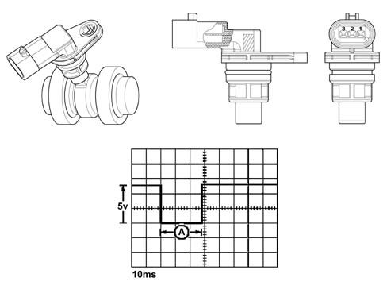

1060GC Check on operation of timing sensor
- Path
- Test > 10 ENGINE > 1060 DIESEL FUEL INJECTION > 1060G pressure pump electric control > 1060GC Check on operation of timing sensor
- Kind
- test / check procedure
- Applies to
- engines: 1.3 JTD; all production periods
- Interactive page
- https://sloeber94.github.io/elrnDB-lYpsln/en/#/2429793
Applies to: engines: 1.3 JTD; all production periods
Check that the sensor output signal is similar to the one illustrated in the enclosed graph.

Applies to: engines: 1.3 JTD; all production periods
Pin 1 Description, earth Signal type, earth
Pin 2 Description, timing signal Signal type, frequency output
Pin 3 Description, supply Signal type, 12 V input